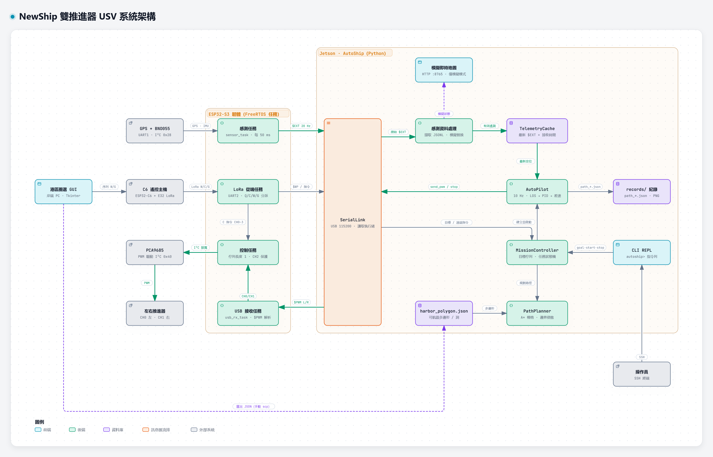
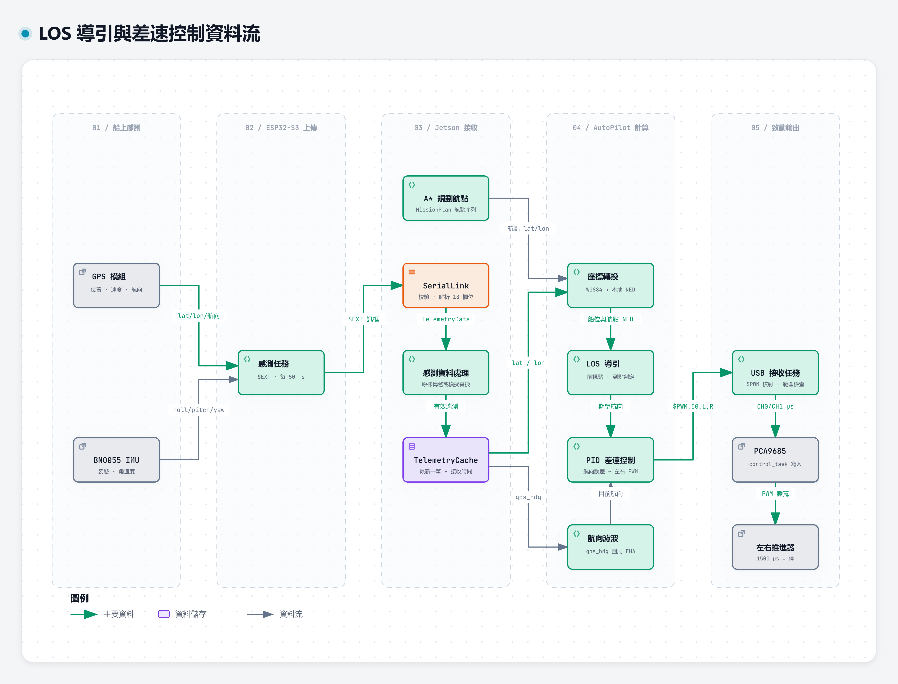
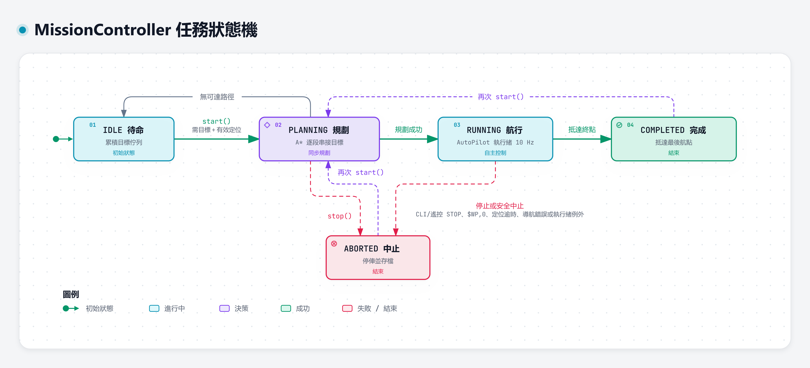
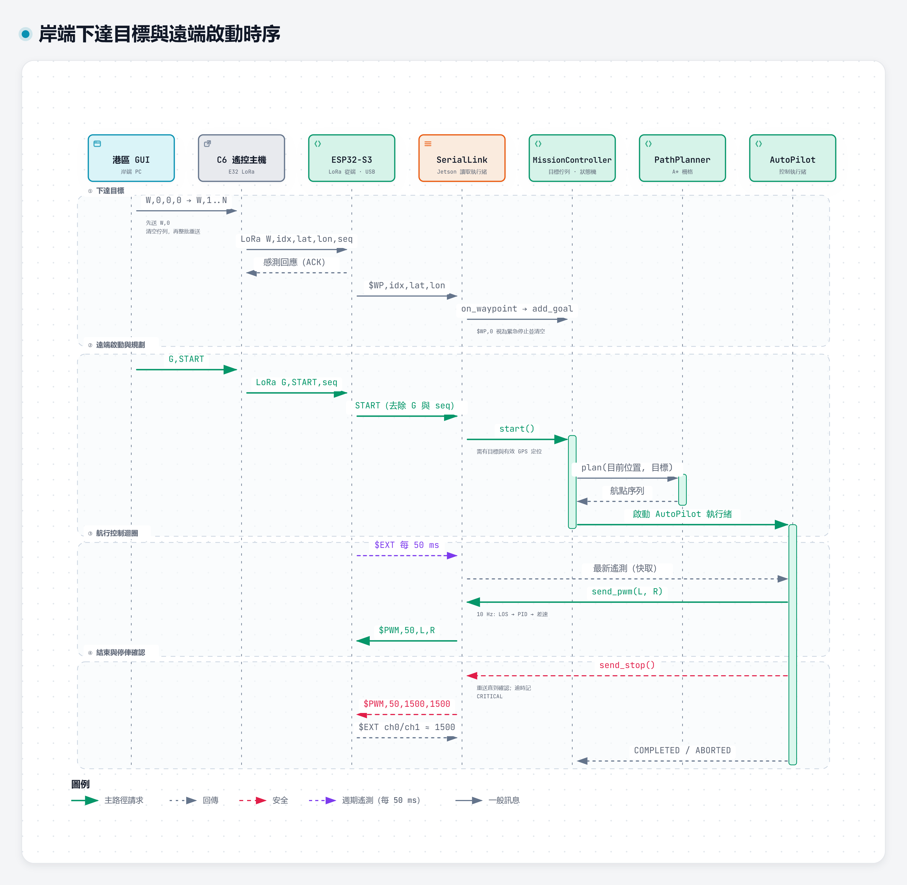

NewShip 雙推進器 USV 架構展示
四張互動式圖表皆由實際程式碼整理而成。點選元件可查看程式碼依據，右上角工具列可切換主題、匯出圖片。











程式碼依據與範圍
- 所有引用對應 commit
6e0cef6；工作區尚未提交的修改未納入。 - 成果標題提到的 VO 避障演算法，在程式碼中查無實作，因此圖中未繪製。
- 圖表原始 JSON 位於
source/，可用 Archify 重新產生。
四張互動式圖表皆由實際程式碼整理而成。點選元件可查看程式碼依據，右上角工具列可切換主題、匯出圖片。




6e0cef6；工作區尚未提交的修改未納入。source/，可用 Archify 重新產生。